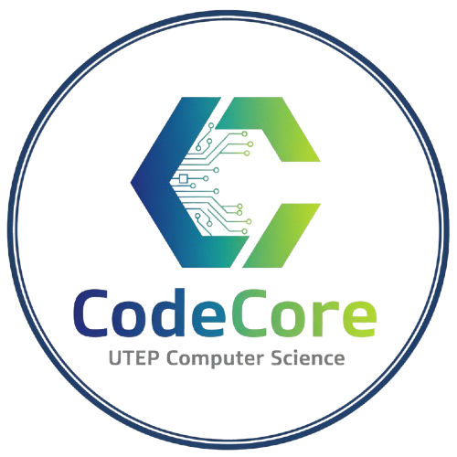

CodeCore Chapter is the grades 3–8 outreach program of CodeCore at UTEP, bringing hands-on coding education directly to elementary and middle schools across El Paso. The program is entirely free for schools and students, staffed by trained UTEP volunteers, and supported through community sponsorships.
Each "chapter" is a school-based coding program that runs weekly sessions during the school year. Sessions are led by a trained school instructor (teacher or staff) and supported by UTEP student volunteers. The program ends each semester with a school hackathon — a celebration of everything students built, with prizes and public recognition for winners.
Close the digital opportunity gap in El Paso by bringing hands-on coding education to local elementary and middle schools. Through UTEP student volunteers and community partnerships, we make computer science accessible, exciting, and relevant for every grades 3–8 student — regardless of background, device, or prior experience.
An El Paso where every child has the coding literacy to participate in tomorrow's economy. CodeCore Chapter aims to grow into a city-wide network of school chapters — a living bridge between UTEP's CS talent and the community it serves — producing a new generation of El Paso builders, problem-solvers, and innovators.
By 2030, an estimated 85 million jobs worldwide will go unfilled because too few people have the technical skills to fill them. In El Paso — a border community with immense potential — early exposure to STEM can be the difference between economic inclusion and exclusion.
Research shows that students who engage with coding before high school are significantly more likely to pursue STEM careers, persist through challenging coursework, and develop computational thinking skills that transfer across every discipline — from medicine to business to music.
| School | Level | Status | Notes |
|---|---|---|---|
| Reyes Elementary School | Elementary | In Talks | CodeCore supported their science fair; actively in discussions about launching a chapter |
No chapters have launched yet — the program is in its founding stage. Reyes Elementary is our first school relationship and a top priority for the Fall 2026 launch. Additional schools are being identified through outreach across El Paso.
Getting a CodeCore Chapter at a school takes four steps. From first contact to first class typically takes 4 weeks.
The curriculum is split into two age-appropriate tracks. Both tracks are designed for complete beginners and include responsible AI education as a core component.
AI education is woven into every chapter — not as a separate unit, but as part of every conversation about technology and its role in society.
Students learn how machine learning works at a conceptual level — from training data to model outputs — without black-box mystification.
Age-appropriate discussions on fairness, privacy, and why the humans behind AI systems bear responsibility for their outcomes.
Students learn what to share and what not to share, and how to evaluate AI-generated content critically before acting on it.
A 6-hour onboarding session for the school's designated point-of-contact before the chapter launches. Covers:
UTEP student volunteers complete Saturday training sessions before visiting schools. Each session covers:
We keep requirements minimal so more schools can join.
| Requirement | Details |
|---|---|
| Grade levels | Open to grades 3–8 (elementary and middle schools in El Paso) |
| Faculty point-of-contact | One teacher or administrator to coordinate with our team and lead sessions |
| Classroom or lab access | At least one space with seating for up to 25 students (devices helpful but not required) |
| Weekly time slot | 60–90 minutes, ideally Fridays. We work around your schedule. |
| Parent awareness | Share a one-page info sheet with families at program start |
| End-of-semester hackathon | Host the closing hackathon at the school — we help organize and provide prizes |
| Feedback | One short feedback form per semester from the faculty contact |
| Cost | Completely free — always |
No formal events have taken place yet — the program is actively being built. Below is the planned roadmap from June 2026 through the first semester launch.
| Date | Milestone | Description |
|---|---|---|
| June 15, 2026 | School Outreach Begins | Follow up with Reyes Elementary and begin formal conversations with additional El Paso elementary and middle schools about launching a chapter |
| June–July 2026 | Officer Recruitment | Open applications for Chapter Officer roles at UTEP. No CS background required — all officers will be trained by the program |
| July 2026 | Officer Selection & Onboarding | Select officers across key roles (Outreach, Curriculum, Operations, Communications). Begin internal training sessions at UTEP |
| July–August 2026 | Curriculum & Materials Prep | Finalize lesson plans for both the 3–5 and 6–8 tracks; prepare activity cards, volunteer guides, and parent information sheets |
| August 2026 | School Agreements & Scheduling | Finalize partnership agreements with confirmed schools; lock in weekly time slots (ideally Fridays) and assign UTEP volunteers |
| August 2026 | Faculty Onboarding | 6-hour onboarding session at UTEP for each school's designated faculty point-of-contact who will lead sessions |
| September 2026 | 🚀 First Chapter Launch | First CodeCore Chapter sessions begin at partner school(s). UTEP volunteers present for the first two weeks, then once a month |
| Oct–Nov 2026 | Monthly Visits & Progress | Monthly UTEP volunteer visits; school instructor leads weekly sessions; mid-semester check-ins and volunteer feedback rounds |
| December 2026 | 🏆 End-of-Semester Hackathon | Hackathon hosted at each chapter school. Students present projects, prizes awarded, winners published by name and school |
CodeCore Chapter is led by UTEP students across a range of roles and supported by a faculty advisor. A CS background is not required to join as an officer — we provide full training. What matters is commitment to the mission and El Paso's students.
| Role | Responsibilities | CS Required? |
|---|---|---|
| Chapter Director | Oversees all chapter operations, school partnerships, and officer coordination | No |
| Curriculum Lead | Adapts and prepares lesson plans for grades 3–5 and 6–8 tracks | No — trained by program |
| Outreach Lead | Builds relationships with school administrators, teachers, and district contacts | No |
| Operations Lead | Manages scheduling, volunteer logistics, materials, and event coordination | No |
| Communications Lead | Runs social media, designs materials, manages sponsor and school communications | No |
| UTEP Volunteers | Attend Saturday training, visit schools the first two weeks and once a month, support the school instructor | No — trained by program |
| Faculty Advisor | UTEP faculty providing academic oversight, guidance, and university resource support | Yes (faculty) |
CodeCore Chapter is entirely funded through sponsorships and donations. All programming is free for schools and students — sponsors make that possible.
| Sponsor | Tier |
|---|---|
| El Paso Electric | Gold |
| Chiquis Bakery | Silver |
These are the swag items we are producing for students, volunteers, and supporters. Partial donations are welcome — no charges are processed on our website; a CodeCore representative will contact you to coordinate.
| Item | Qty Needed | Priority |
|---|---|---|
| CodeCore T-Shirts | 200 | High |
| CodeCore Sweatshirts & Hoodies | 100 | Medium |
| CodeCore Hats | 100 | Medium |
| CodeCore Mugs | 50 | Low |
| CodeCore Bracelets | 200 | Low |
| CodeCore Notebooks & Pens | 200 | Medium |
These are needs we are working toward as the program grows and secures additional funding. Schools that already have devices can participate without any of these.
| Item | Qty Needed | Priority |
|---|---|---|
| Chromebooks | 60 | High |
| Wireless Mouse & Keyboard Sets | 30 | High |
| Mobile Power Tower | 4 | Medium |
| CS Unplugged Activity Cards | 20 sets | Medium |
Interested in bringing CodeCore Chapter to your school? Fill out our interest form and we'll be in touch within 48 hours. No cost, no experience required.
Support us financially, donate items from our wishlist, or sponsor the end-of-semester hackathon prizes. Every contribution goes directly to students.
Open to all UTEP students — no CS background required. Join as a chapter officer (Outreach, Curriculum, Operations, Communications) or as a school volunteer. All roles include full training provided by CodeCore.